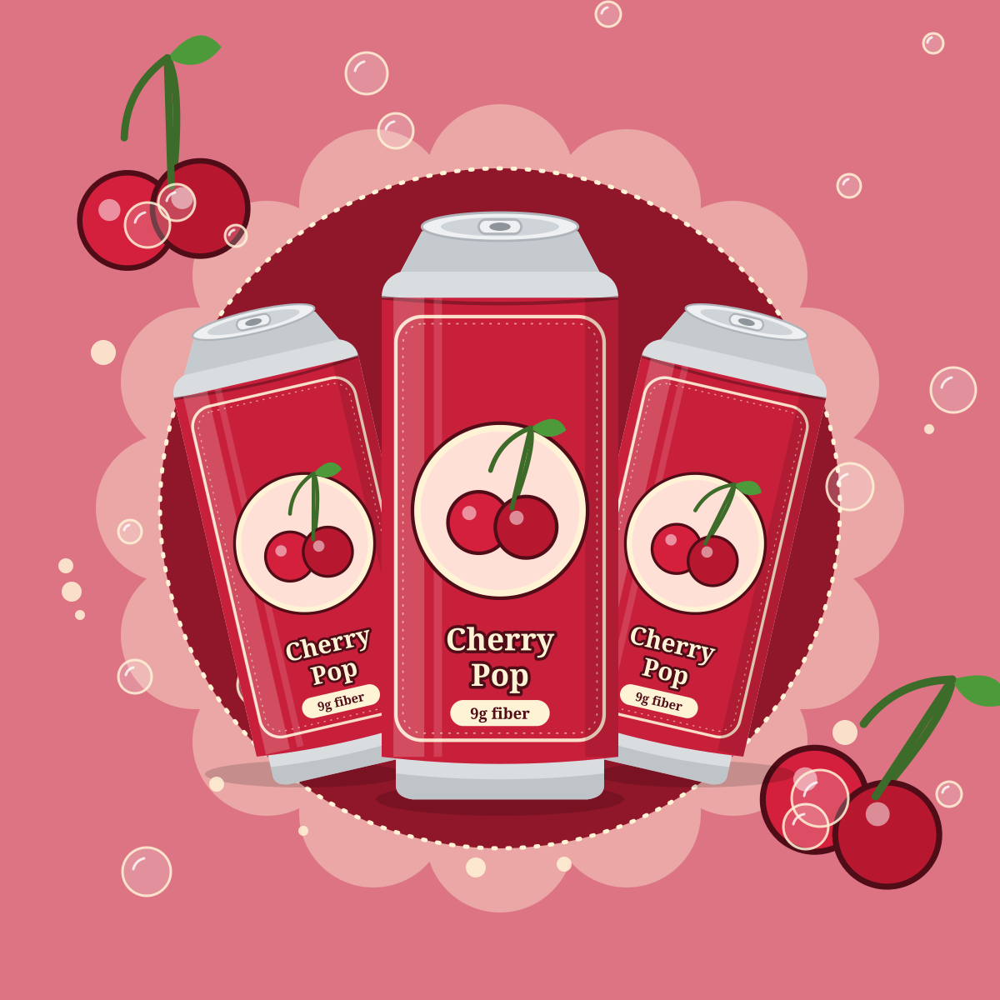

Big fizz. Small sugar.
Prebiotic soda with real fruit flavor, 2g of sugar and a lot of attitude. Stock up and save on every case.
Shop flavors
Prebiotic soda with real fruit flavor, 2g of sugar and a lot of attitude. Stock up and save on every case.
Shop flavors